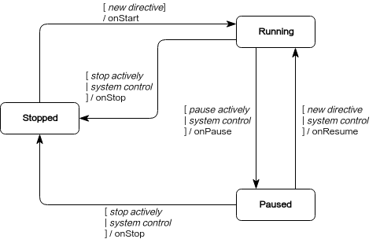

Skill
Skill is an application component of Cruzr, which is used to let the robot receive user instructions and perform actions. It is also used to accept the system's control on actions. A skill contains a set of related instructions, which represents a set of robot actions. The robot accepts the related instructions and executes the related actions accordingly.
As an integral control unit of Cruzr, the skill also receives control notifications from the system such as start, pause, resume, and stop. Upon receiving control notifications, the skill controls the start, pause, resume, and stop actions of the robot accordingly. The action performed by one skill may conflict with the action performed by other skills or the state of the system. The role of the control notification is to assist the system in handling these action conflicts. After the Cruzr system detects action conflicts, it makes decisions and issues control notifications to the skills involved in the action conflicts. The skills will control their actions, so that the conflicts can finally be resolved.
Skills include common skill and background skill . The difference between these two is that the background skills don't have pause or recover state, and can stay in the background.
Cruzr has a set of built-in skill interruption logic, which stipulates the rules of interrupting for the skills in the system. The rules of interrupting include:
1.Refuse to enter new skills. For example, when the robot is currently in an emergency stop, navigation, voice and other skills cannot be entered.
2.The newly entered skills co-exist with the current skills. For example, when recharging, touching the electronic skin will not interrupt the process.
3.The newly entered skills interrupt the current skills. For example, when the robot is playing music and its battery is low, the robot will enter the recharging skill and interrupt the music skill.
4.Undefined skills, if they are allowed to start, will not change other skills.
Create and configure skills
A complete skill must contain the corresponding Java class and configuration file. The Java class is used to receive related instructions and perform related behaviors. The configuration file is used to declare the existence of the skill to the system and inform the system of the set of instructions received by the skill.
Create skills
Create a Java class to inherit RobotSkill (common skill) or RobotBackgroundSkill (skills running in the background). The following code indicates the creation of a Java class named FooSkill. In actual development, the class name should reflect the general behavior of the skill.
package robot.example; import com.ubtrobot.skill.RobotSkill; public class FooSkill extends RobotSkill { }
-
~~~java package robot.example;
import com.ubtrobot.skill.RobotBackgroundSkill;
public class FooSkill extends RobotBackgroundSkill { } ~~~
Configure the skill
In the app/src/main/res/xml directory, create a robot_manifest.xml file and add an xml file declaration and a <manifest> root tag. In the <manifest> tag, add the corresponding skill configuration for the FooSkill.java class created in the previous step. Each skill component needs to be configured with a <skill> tag.
<?xml version="1.0" encoding="utf-8"?> <manifest> <skill class="robot.example.FooSkill" name="foo"> </skill> </manifest>
The tags and their characteristics involved in the configuration above are the most necessary configurations required by the skills. The complete configuration is as follows:
<?xml version="1.0" encoding="utf-8"?> <manifest> <skill class="[string]" name="[string]" background = "boolean" description="[string_resource]"> <directive action="[string]" context="[string]" corpus="[corpus_baz1]" triggerPause="boolean" triggerStop="boolean"/> </skill> </manifest>
The corpus voice instructions in the configuration above support multiple languages, as follows:
<!-- values/arrays.xml --> <resources> <string-array name="corpus_baz1"> <item>Hello</item> <item>Hi</item> </string-array> </resources> <!-- values-zh-rCN/arrays.xml --> <resources> <string-array name="corpus_baz1"> <item>Hello</item> <item>Hi</item> </string-array> </resources>
The description of the configuration file is as follows
| Tag | Characteristics | Descriptions | Necessity |
|---|---|---|---|
| skill | class | The skill Java class needs to include a standardized name | Yes |
| skill | name | The skill name is the unique identifier of the skill in an application, which can briefly describe the role of the skill | Yes |
| skill | background | By default false |
No |
| skill | description | A detailed description of the skill to introduce its functions | No |
| skill.directive | action | The unique identifier of the instruction. No duplicates allowed. Generally, the format is skillName/intent. | Yes |
| skill.directive | context | The instruction contextrequired to receive this instruction. It is used in normal skills only. | No |
| skill.directive | corpus | The voice instruction corpus supports multiple languages. No duplicates allowed. It is only used in voice instructions. | No |
| skill.directive | triggerPause | The current instruction will automatically trigger the skill to enter the pause state, which is only used in common skills | No |
| skill.directive | triggerStop | The current instruction will automatically trigger the skill to enter the stop state | No |
Note: for the background skill,
contextandtriggerPauseis invalid. In addition,triggerPauseandtriggerStopcannot coexist.
instructions
An instruction can be understood as a kind of order. The role of an instruction is to control skills. By giving specific instructions, you can control the corresponding skills to perform certain actions.
Objects of instructions
All the attributes of Directive include:
| Constants | Descriptions |
|---|---|
| Directive.SOURCE_IN_PROCESS | The instruction source comes from in-process calling |
| Directive.SOURCE_INTER_PROCESS | The instruction source comes from inter-process calling |
| Directive.SOURCE_INTER_PROCESS_SPEECH | The instruction source comes from inter-process voice calling |
| Directive.SOURCE_INTER_PROCESS_TIMER | The instruction source comes from inter-process timer calling |
| Directive.SOURCE_INTER_PROCESS_REMOTE_DEVICE | The instruction source comes from inter-process remote device calling |
| Attribute getter | Descriptions |
|---|---|
| Directive.action | The unique identifier of the instruction is generally understood as the intent of the instruction. The intent distributes the key information of the instruction. |
| Directive.source | The source of the instruction indicates where the instruction was distributed from. See Directive.SOURCE_ * constants |
| Directive.sourceExtra | Additional description of the source of the instruction, which is used to add user-defined parameters. |
| Directive.paramObj | Parameter object attached to the instruction |
| Directive.contentType | The type of parameter attached to the instruction during the serialization process, by default: ContentTypes.PARCELABLE, see Serialization |
| Directive.paramBytes | Serialize byte array of the parameter attached to the instruction |
| Directive.corpus | The corpus of the voice instructions means the voice text can trigger the instruction. The voice distributes the key information of the instruction. |
Configure instructions
After the skills are created and configured, the Cruzr system can already recognize the newly created skills. Next, you need to give declaration instructions to the skills.
Add all supported instructions inside the <skill>tag in robot_manifest.xml. The following code is declared with FooSkill, which is assumed to support two instructions. The following only displays the most basic configuration. Please refer to the configuration file for the complete configuration.
<?xml version="1.0" encoding="utf-8"?> <manifest> <skill class="robot.example.FooSkill" name="foo"> <directive action="foo.BAZ1" /> <directive action="foo.BAZ2" /> </skill> </manifest>
Receive instructions
The action instruction declared in the robot_manifest.xml of the skill must correspond one-to-one with the method modified by the OnDirective annotation in the Java class in order to receive the instruction normally. Otherwise, RuntimeException will be thrown out when the application fails to pass the checkout, and cause a crash when it is started. The source of the actioninstruction can be specified by a third-party server or defined by the user, as long as it can identify the unique instruction. The action of the instruction can be a string of any style, but the recommended style is "noun[.noun].VERB", such as music.PLAY.
Instruction without parameters
Adding receiving methods of the instructions in the skill's Java classes is a public method decorated with OnDirective annotations. The following code is described in FooSkill as stated above.
public class FooSkill extends RobotSkill { @OnDirective(action = "foo.BAZ1") public void onBar1Directive() { } @OnDirective(action = "foo.BAZ2") public void onBar2Directive() { } }
Instruction with parameters
For an action instruction, it either doesn't carry any parameter or it carries parameters with the same data type and structure. In the case of carrying parameters, the parameter object can be obtained in two ways. Here is a case where the parameter object is Bar.
- Method one: Obtain the parameter object directly from the parameters of the instruction receiving method
public class FooSkill extends RobotSkill { @OnDirective(action = "foo.BAZ1") public void onBar1Directive(Directive directive, Bar bar) { // bar is the parameter object. } }
- Method two: Obtain the parameter object from the instruction object
public class FooSkill extends RobotSkill { @OnDirective(action = "foo.BAZ1") public void onBar1Directive(Directive directive) { Bar bar = directive.getParamObj(Bar.class);//[1] // bar is the parameter object. if (bar == null) { // The directive was not dispatched correctly. } } }
For instructions that come from inter-process, the instruction parameters will undergo serialization and deserialization in the process of distribution and reception. In the above two methods for obtaining parameters, the instruction parameters are automatically deserialized (converted from a byte array into a Java object). By default, Cruzr only supports ContentTypes.PARCELABLE.
In the two methods above, the default instruction parameters are used for automatic deserialization. If the built-in instruction parameter is not used for automatic deserialization, the byte array of the instruction parameter can be used for manual deserialization.
public class FooSkill extends RobotSkill { @OnDirective(action = "foo.BAZ1") public void onBar1Directive(Directive directive) { byte[] parameterBytes = directive.getParamBytes(); // Use the bytes to deserialize to the Bar object. } }
Note: The first parameter of the instruction method with parameters must be Directive
A disadvantage of directly configuring the instruction parameters in the parameter list of the receiving function is that all the parameters of the instruction must be Bar, otherwise, the instruction parameter serialization exception will be returned.
Voice instructions
The instructions that the voice system service recognized and understood from the user's words to the robot are called voice instructions. The parameter objects of the voice instructions are unified as the UnderstandingResult class.
public class FooSkill extends RobotSkill { @OnDirective(action = "foo.BAZ1") public void onBar1Directive(Directive directive, UnderstandingResult result) { // Use the result object getting the info of speech directive } }
The distribution of common instructions is achieved by comparing the unique identification action. For voice instructions, it can be achieved by comparing to the corpus (words spoken to the robot). When configuring the robot_manifest.xml file for the skill, add corpus for the corresponding instructions, as shown below.
<?xml version="1.0" encoding="utf-8"?> <manifest> <skill class="robot.example.FooSkill" name="foo"> <directive action="foo.BAZ1" corpus="@array/corpus_baz1" /> </skill> </manifest>
Processing instructions
Some instructions are only open for receiving when in a certain context or when they meet a certain condition. Take playing music as an example. After receiving the "play" instruction, the music starts to play, and then the "pause" instruction is opened for receiving. When the music is not playing, the pause command is invalid.
<?xml version="1.0" encoding="utf-8"?> <manifest> <skill class="robot.example.FooSkill" name="foo"> <directive action="foo.BAZ1" /> <directive action="foo.BAZ2" context="foo_context" /> </skill> </manifest>
The following code illustrates how to enter and exit the context:
public class FooSkill extends RobotSkill { private static final String CTX_FOO = "foo_context"; @OnDirective(action = "foo.BAZ1") public void onBar1Directive() { enterContext(CTX_FOO); //enter "foo_context" context // Perform some behavior asynchronously performSomeBehavior(new Callback() { @Override public void onDone() { // After finishing performing the behavior, exit context exitContext(CTX_FOO); } }); } @OnDirective(action = "foo.BAZ2") public void onBar2Directive() { // Be here // only after enterContext(CTX_FOO) and before exitContext(CTX_FOO); } }
Note: The context variable value of the instruction used in the code must be consistent with that in the configuration file to be valid.
Reply instructions
After all the instructions are processed, the instruction sender must be replied to. By default, the Cruzr system will automatically reply the processing result of the instruction (success or failure) to the caller. If you need to reply with the results autonomously, you can add a parameter Replier of the instruction receiving function.
- Reply success or failure
public class FooSkill extends RobotSkill { @OnDirective(action = "foo.BAZ1") public void onBar1Directive(Directive directive, Replier replier) { boolean success = performSomeBehavior(); if (success) { replier.replySuccess(); } else { replier.replyFailure(errorCode, "error message"); } } }
- Reply data result
public class FooSkill extends RobotSkill { @OnDirective(action = "foo.BAZ1") public void onBar1Directive(Directive directive, Replier replier) { Result result = performSomeBehavior(); replier.replySuccess(result); } }
- Reply viscosity data results
public class FooSkill extends RobotSkill { @OnDirective(action = "foo.BAZ1") public void onBar1Directive(Directive directive, Replier replier) { StickilyResult stickilyResult = performStickilyBehavior(); replier.replyStickily(stickilyResult); Result result = performResultBehavior(); replier.replySuccess(result); } }
Note: Replier must be the last in the parameter list of the instruction receiving function
Distribute instructions
Instructions can be distributed to skills through [RobotContext[ or [SkillManager[. RobotContext is used to distribute instructions within a process. SkillManager is often used to distribute inter-process instructions. But it is not recommended to distribute the instructions with the process. Since the Java class of the skill is inherited from RobotContext, the skill class itself can distribute instructions to other skills within the application.
public class Example { public void dispatchDirective(RobotContext robotContext) { // Dispatch a directive without a parameter object. Promise<Void, DispatchException> promise = robotContext.dispatchDirective(action); // Dispatch a directive with a parameter object. promise = robotContext.dispatchDirective(action, arbitraryObject); } ｝
Note: For detailed usage of instruction distribution, please refer to Context and Skill Management
Skill status
Skills include four states: start, pause, resume, and stop. When the state changes, there will be corresponding notifications. There are two reasons for the change of skill state, namely, system control and manual control. The relationship between the states is shown in the following figure:

Status notification
When the status of the skill changes, the system will send corresponding notifications, which selectively override the corresponding status and constrain the action of the skill. For example, the skill of music playback is in the running state while playing music. When receiving the system notification of onPause, the playback should be paused.
public class FooSkill extends RobotSkill { @Override protected void onStart() { // Ready to receive directives } @Override protected void onResume(boolean directiveWillFollow) { // Resume the paused behavior } @Override protected void onPause(SkillPauseCause cause) { // Pause the performing behaviors } @Override protected void onStop(SkillStopCause cause) { // Stop the performing behaviors } }
The onResume (boolean directiveWillFollow) parameter indicates whether an instruction will be received immediately after the skill is restored, which means the restoration of the current skill is triggered by a new instruction. The parameters onPause (SkillPauseCause cause) and onStop (SkillStopCause cause) describe the reason for the status change. The specific meanings is as follows:
| Name | Descriptions |
|---|---|
| BY_SYSTEM_DECISION | The current result is triggered by system decision. |
| BY_SKILL_MANAGEMENT | The current result is triggered by the skill management class. |
| BY_PAUSING_SELF | The pause status is actively triggered. |
| BY_STOPPING_SELF | The stop status is actively triggered. |
| BY_INTERNAL_ERROR | The stop status is trigged by an internal error. |
| Name | Descriptions |
|---|---|
| cause | For the reasons for status trigger, please refer to the above constants |
| condition | The cause of the trigger is only valid when cause == BY_SYSTEM_DECISION. |
Control status
After receiving the instruction, the skill begins to perform the action. When the action is completed, stopSelf () should be called to actively stop the current skill. If you don't actively stop the skill, the skills that didn't execute any actions make the other skills which conflict with it unable to execute any instruction. Here are ways to stop the skill internally and externally, respectively. For example: The navigation skill starts navigating when a navigation instruction is received. When the navigation task ends, it should actively call stopSelf () to stop the skill. Otherwise, the navigation skill is still in the running state, which will cause other skills to fail to be executed. Here are ways to stop the skill internally and externally, respectively.
- Stop the skill internally
public class FooSkill extends RobotSkill { private void onBehaviorEnd() { stopSelf(); } }
- Stop the skill externally
public class Example { public void stopSkill() { Robot.globalContext().stopSkill(skillName); } }
In addition, in some cases, it is necessary to actively pause the skill. For example, when the user tells the robot to pause the music, the skill of playing music should be paused. Here are ways to pause the skill internally and externally, respectively. - Pause the skill internally
public class FooSkill extends RobotSkill { private void onPauseNeeded() { pauseSelf(); } }
- Pause the skill externally
public class Example { public void pauseSkill() { Robot.globalContext().pauseSkill(skillName); } }
Note: because background skill don‘t have pause or recover state, there is no situations to pause backgroud skills